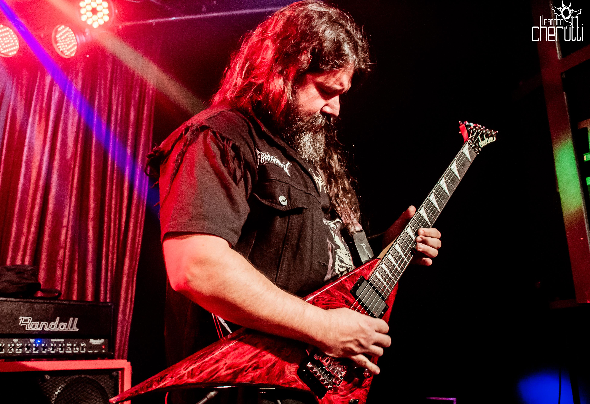

Licks e Padrões para usar em praticamente qualquer música
Neste ebook temos 10 exemplos de Frases e Licks em tons variados utilizando basicamente a pentatônica, penta m7 e penta blues. Não adicionei nada fora da penta. Estas frases podem ser interpretadas em praticamente qualquer música — basta ajustar o tempo e, obviamente, a tonalidade.
Quer estudar mais sobre Escala Pentatônica? Conheça meu curso completo sobre penta! São mais de 30 licks nos estilos bluesy, rock, metal, Zakk Wylde, Dimebag Darrell, com patterns, exercícios, além de aulas de bend e vibrato, palhetada híbrida, improvisação, teoria e relação entre pentas m7, blues, m6 e M7. Um curso completo pra você detonar na pentatônica!
Aulas Online de Guitarra
Estude comigo em tempo real, do zero ao avançado!